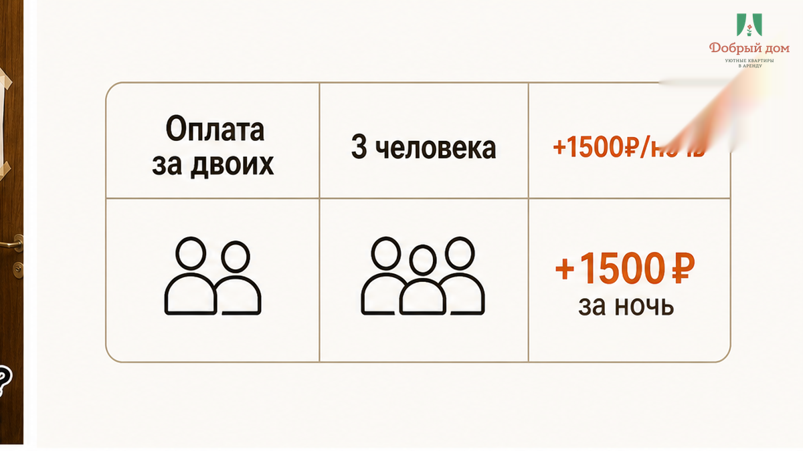
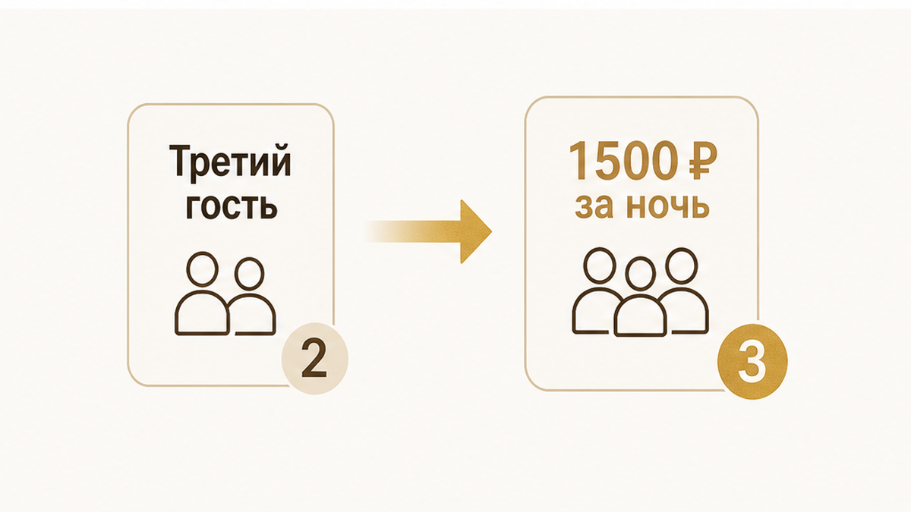
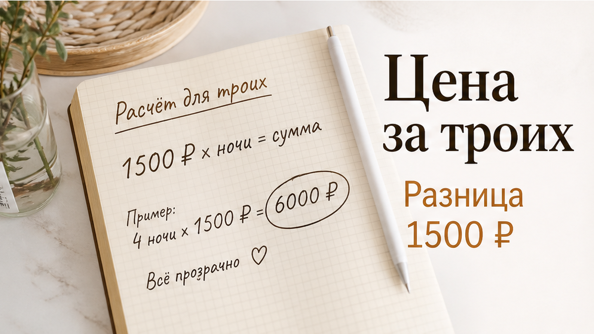
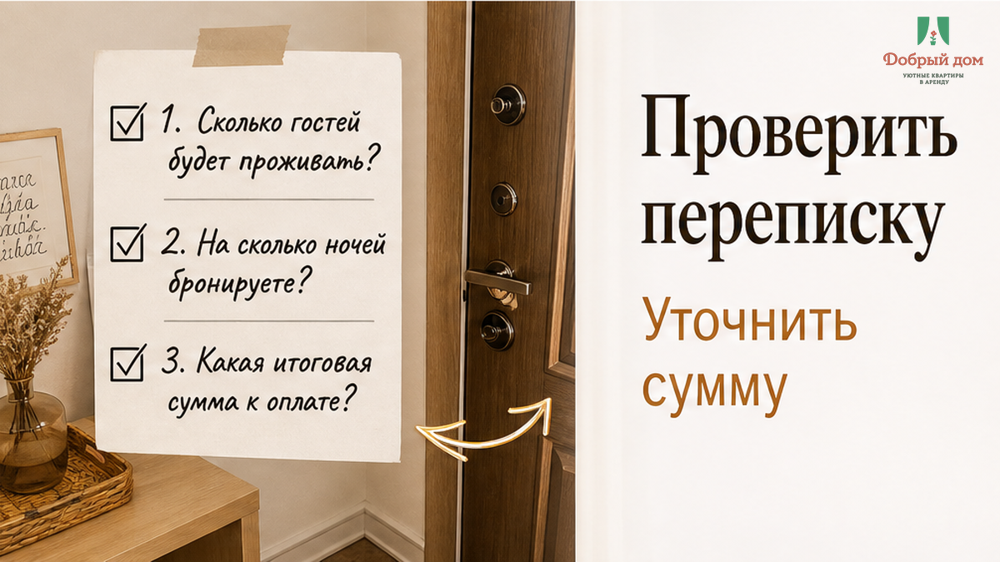

Суббота, 23 августа 2026 года, 21:40. Тюмень, двор у подъезда, три чемодана на плитке, такси уже уехало. Пара забронировала квартиру на двое суток через агрегатор и заранее заплатила 4 800 ₽ — по 2 400 ₽ за ночь, «за двоих». Вместе с ними приехала сестра: всего трое взрослых. Хост открыл дверь, пересчитал людей и сказал ровно ту фразу, которую мне потом процитировали дважды: «Третий — доплата 1 500 ₽ за ночь, в объявлении написано». Ещё 3 000 ₽ сверху. На лестничной площадке. В 21:40. С чемоданами и уже уехавшим такси.
В голове гостя «квартира за 2 400 в сутки» — это квартира: дверь, кровать и диван, которые были на фотографиях. В голове хоста «2 400» — тариф на двоих, а третий человек — отдельная строка в календаре. Две честные арифметики встретились в одном месте и в самое неподходящее время. И вот здесь мы говорим прямо: нет. Так не заселяем. Не потому, что доплата за гостя сама по себе обман. Это нормальное условие. Но доплата, которая впервые появляется у двери, — уже не цена. Это деньги, которые требуют в тот момент, когда человеку некуда отступать.
Я хост посуточной в Тюмени. Это «Добрый дом». Мы принимаем гостей на сутки и на неделю: семьи, командировочных, тех, кто приехал в клинику или к ребёнку в общежитие. Общаемся без бумажного тумана и скрытых строк. Связь у нас простая: Telegram · MAX.

14:10. Пара приезжает в Тюмень. Бронь оформили за неделю, оплатили сразу. В письме есть адрес, время заезда с 15:00, имя хоста и телефон. Количество гостей тоже указано — двое, но в поле, которое гость легко пролистывает вместе с остальными условиями.
21:15. После ужина они вызывают такси втроём. Сестра приехала днём из Ишима на маршрутке. Решение спонтанное: «Ну переночует с нами, диван же есть». Вопрос, который казался бытовым, стал денежным только у подъезда.
21:40. Дверь. Хост спрашивает: «Вас трое?» Гости отвечают: «Трое». В ответ слышат: «Третий — доплата 1 500 ₽ за ночь, в объявлении написано». Гость открывает карточку в телефоне и действительно находит эту строку. Она есть — в блоке «Условия», между «без животных» и «залог 3 000 ₽».
21:52. Звонок в поддержку агрегатора. Оператор отвечает корректно и одновременно бесполезно: условия размещения указаны в карточке, хост вправе установить доплату, оплата покрывает двух гостей. Дальше два варианта: доплатить или отменить бронирование с удержанием за первые сутки.
22:06. Гости пишут нам. Не потому, что мы обещали быть дешевле. Потому что в нашей карточке итоговая цифра и количество людей стоят крупно — до оплаты, а не после приезда.
22:35. Они заселяются. Трое. Без доплаты у двери. Не потому, что третий человек ничего не стоит, а потому, что такие вопросы нужно решить в переписке, когда у гостя ещё есть время подумать и выбор остаться или отказаться.
По деньгам получилось так: из 4 800 ₽ половину удержали, спор с поддержкой растянулся на девять дней. Но человек потерял не только возможные 3 000 ₽ доплаты. Он потерял час у подъезда, 2 400 ₽ невозврата и то самое спокойствие, ради которого снимают квартиру, а не ищут ночлег на ходу.

Третий гость действительно может означать дополнительные расходы. Это ещё один комплект белья, полотенце, стирка, больше воды и износ. На двух ночах разница кажется небольшой, но для хоста каждая такая мелочь складывается в расходы. Поэтому базовый тариф часто считают на двоих, а следующий человек добавляется отдельной строкой: 500 ₽ за ночь, 800 ₽, 1 500 ₽ — сумму хост устанавливает заранее.
В этом нет ничего странного, пока гость видит условие до оплаты. Цена может быть любой из тех, что указаны в объявлении. Важно другое: человек должен понимать, за что именно он платит и сколько будет стоить вся бронь целиком.
Проблема начинается там, где крупно написано «2 400 ₽ в сутки», а доплата прячется в свёрнутом блоке условий. Гость умножает 2 400 на две ночи, оплачивает 4 800 ₽ и считает вопрос закрытым. Хост видит иначе: куплены два места, третий человек оплачивается отдельно. Оба считают себя правыми — до момента, когда встречаются у двери.
Поисковые запросы вроде «доплата за гостя» каждый месяц задают сотни людей по всей стране. Обычно не до бронирования, а после: когда уже приехали, открыли карточку, нашли мелкий текст и поняли, что выбор теперь стоит денег.
Порог квартиры вообще быстро показывает, что было недосказано в объявлении. Об инструкции и коде у двери — в материале «Оплатил квартиру посуточно. Код прислали от чужой двери». Про залог на выезде — «Снял квартиру посуточно. Залог не вернули — нашли скол на плите». А когда «рядом» в объявлении не совпадает с маршрутом — «Привезли сына к вузу — «рядом» оказалось 40 минут пешком».
Сюжеты разные, но механизм один: расхождение обнаруживается после оплаты. Не тогда, когда можно спокойно сравнить варианты. Не в переписке, где можно задать вопрос. А между лифтом и дверью, когда у гостя три чемодана, уехавшее такси и чужой человек, который уже называет новую сумму.
Не спрашивайте только: «А можно с третьим?» На это легко ответить: «Конечно, места хватит». Места действительно может хватить, но разговор был не о площади дивана.
Спросите точнее: «Сколько человек входит в бронь и где это написано в итоговой сумме?»
Нормальный ответ звучит без обходных слов: «В бронь входят двое. Третий — плюс 1 500 ₽ за ночь. Итог за две ночи — такая-то сумма». Лучше, если это останется в переписке и попадёт в подтверждение. Тогда у обеих сторон одна арифметика: не крупная цена в карточке отдельно и мелкое условие где-то ниже, а конкретная сумма за конкретное количество людей.
А в вашей последней посуточной брони было прямо написано, сколько человек заселяется? Откройте чек или переписку сейчас. Если там стоит «2», а ехать вы собираетесь втроём, напишите нам в Telegram или MAX. Посмотрим конкретную бронь до того, как вы окажетесь на площадке с чемоданами. В комментариях мы такие вопросы не разбираем.
Сначала нужно проверить, кто входит в бронь, сколько стоит каждая ночь и какие условия относятся именно к вашей компании. Потом — перевести деньги и получить ключ. Не наоборот.
Цена, которую гость впервые слышит у двери, перестаёт быть обычным условием. Это доплата за безвыходность. Та же сумма, названная за три дня до заезда, — просто часть тарифа, с которой можно согласиться или не соглашаться. Разница не в 1 500 ₽. Разница в том, может ли человек в этот момент сказать «нет» и не остаться ночью с чемоданами.
Поэтому у нас не бывает «приедете — договоримся» и «в объявлении же написано». Мы заранее спрашиваем, сколько человек будет жить, называем итоговую сумму и фиксируем её в переписке. Если состав гостей меняется, меняется и расчёт — но до заселения, а не на лестничной площадке.
Шесть вопросов займут около четырёх минут. Это дешевле, чем 3 000 ₽ на лестничной площадке, 2 400 ₽ невозврата и девять дней переписки с поддержкой.

Наш вывод простой. Хороший хост — не обязательно тот, у кого самая низкая цена. Хороший хост — тот, у кого все цифры сказаны раньше, чем в руках гостя оказался чемодан. Если количество людей и итоговая стоимость не меняются внезапно у двери, это и есть нормальное гостеприимство.

Если знаете даты и сколько вас будет — напишите сразу, назовём итоговую сумму одной цифрой.
Telegram-канал: t.me/Dobriy_dom_72
Менеджер в Telegram: t.me/Dobriy_dom_Tyumen
MAX: max.ru/id660300569233_biz
Сайт: добрыйдом-72.рф
Бронирование: добрыйдом-72.рф/booking/
Телефон: +7 (993) 574-83-22